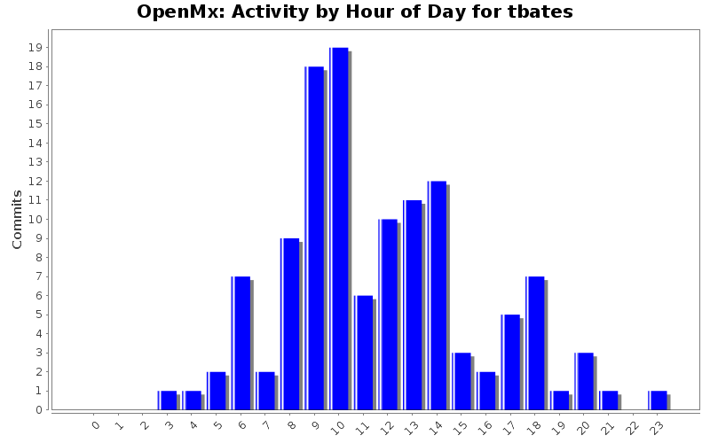
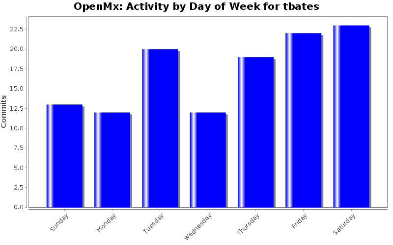
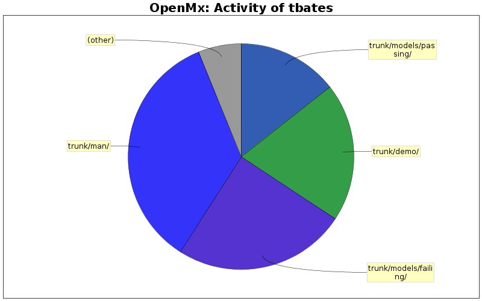

| Directory | Changes | Lines of Code | Lines per Change |
|---|---|---|---|
| Totals | 121 (100.0%) | 2444 (100.0%) | 20.1 |
| trunk/man/ | 48 (39.7%) | 854 (34.9%) | 17.7 |
| trunk/models/failing/ | 19 (15.7%) | 604 (24.7%) | 31.7 |
| trunk/demo/ | 25 (20.7%) | 485 (19.8%) | 19.4 |
| trunk/models/passing/ | 10 (8.3%) | 352 (14.4%) | 35.2 |
| trunk/R/ | 13 (10.7%) | 119 (4.9%) | 9.1 |
| trunk/docs/source/ | 3 (2.5%) | 27 (1.1%) | 9.0 |
| trunk/models/passing/mx-scripts/ | 1 (0.8%) | 2 (0.1%) | 2.0 |
| trunk/ | 1 (0.8%) | 1 (0.0%) | 1.0 |
| trunk/docs/source/graph/ | 1 (0.8%) | 0 (0.0%) | 0.0 |

fixing an errant trailing }
27 lines of code changed in 1 file:
Better links in OpenMx.Rd for the new users (who are most likely to type ?OpenMx wanting pointers to help)
7 lines of code changed in 1 file:
adding a info on how to access the data files that come with openmx, to help people discover how to use the program.
might be nice to have an example model here, or a link to the mxModel page with "Start here to see how to build a simple model"
2 lines of code changed in 1 file:
added advice to call traceback() to see what call is generating an otherwise ill-localized error
3 lines of code changed in 1 file:
added info to starting values conflict to help the user respond effectively
e.g.
bothSexes1 = mxRun(bothSexes1)
Running Both
Error: The free parameter 'PaternalSESfac_HousingTenure7fac' has been assigned multiple starting values! See matrix 'girl1.S' at location (2, 1) and matrix 'boy1.S' at location (2, 1) If you want to fix this automatically, call model <- omxAssignFirstParameters(model) before running again
5 lines of code changed in 1 file:
just fixing a small copy-paste typo (apth->matrix)
1 lines of code changed in 1 file:
updated thresholds description, usage of threshnames, and how to access the output of the model
6 lines of code changed in 1 file:
corrected typo in error string: LatentVars -->latentVars
1 lines of code changed in 1 file:
adding additional fields example, usage... to myFADataRaw.Rd
11 lines of code changed in 1 file:
Improved error when obs data do not contain the variables used in the filter matrix by
at least returning the variables not found in the observed data... could be better yet
5 lines of code changed in 1 file:
modifed insertAllPathsRAM() to give a helpful error message when paths contain invlaid from or to
couple of embedded TODOs mark the changes; please someone else have a look over this
# TODO someone please check this and the fragment on 303
legalVars = c(model@latentVars, model@manifestVars, "one")
for(i in 1:length(paths)) {
path <- paths[[i]]
missingvalues <- is.na(path@values)
path@values[missingvalues] <- 0
if (single.na(path@to)) {
path@to <- path@from
paths[[i]] <- path
}
# TODO please check this (down to 312)
allFromTo = c(path@from, path@to)
if(! all( allFromTo %in% legalVars) ){
MIA = allFromTo[!(allFromTo %in% legalVars)]
stop(paste("Nice try: you need to add ",
omxQuotes(MIA),
"to either manifestVars or LatentVars before you",
"can use them in a path."), call. = FALSE)
}
15 lines of code changed in 2 files:
Enhanced error s checking on duplicate variables in manifests and latents: now reports which ones are duplicates
7 lines of code changed in 1 file:
Added slightly more informative error to mxData
when called without numbObs, by noting the actual
parameter the user should add
1 lines of code changed in 1 file:
Improved documentation for BMI data in twinData.Rd
typo fixed: Ago -> Age
Added units (m, kg)
Noted that "bmi" is actually log(bmi)
Noted that "htwt" is in fact wt/ht^2
TODO : Someone should add an appropriate citation for these data here...I'm not sure which it would be.
5 lines of code changed in 1 file:
Changed error mxData throws when type not set and data = raw
Users can read the new error grammatically, it asks and them to do something; and it shows the type.of(string) they need to provide
old error: Type must be one of: raw cov cor sscp
new error: Type must set to one of: 'raw' 'cov' 'cor' or 'sscp'
4 lines of code changed in 1 file:
patched the error for fewer thresholds in a column than are required to be more helpful
this thread is relevant: http://openmx.psyc.virginia.edu/thread/1307#comment-3908
appreciate an eye to check for correctness
t
9 lines of code changed in 1 file:
Deleted myFAData.txt (duplicates data in myFADataRaw.txt)
Updated omxMnor adn omxAllInt to use myFADataRaw
Added a bit an alternative spec of the bound to omxMnor
24 lines of code changed in 2 files:
help file for myFADataRaw
67 lines of code changed in 1 file:
Fleshing out the docs for mxFIMLObjective to include information on thresholds.
This page also needs more examples, including examples that use thresholds, and showing how the dimnames options are used.
Also needs information on what "vector" is used for.
Question: Do the columns have to be ordered from most to least # of thresholds, left to right?
9 lines of code changed in 1 file:
just setting manifest variable shape to square, rather than box, given that type exists natively
1 lines of code changed in 1 file:
(82 more)